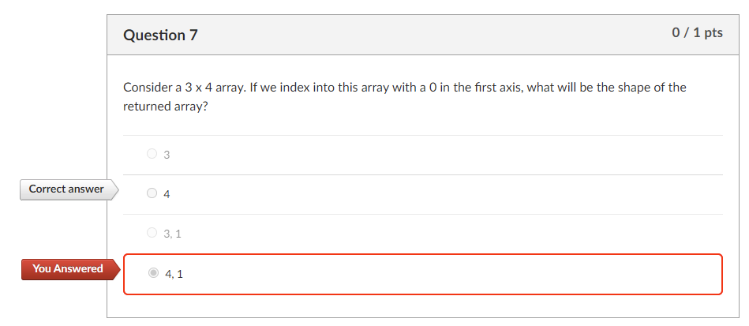

import numpy as npM07 Notes
M05 Quiz

- Shape is represented here without parentheses, so there is no need to use the comma on a single value.
- The answer is clearly not two values. This is the salient point. Even if this were a syntactic error, the logical answer would not be two values.
NumPy
- Structured arrays can actually store mixed data types.
- Apparently, this has been a feature of NumPy since version 1.0, released in 2006.
- It’s odd, then, that NumPy arrays are often introduced as requiring a single data type. 🤔
- Use
df.to_numpy()to convert Pandas dataframes to NumPy data structures.
Here is an example.
We create a list of tuples of mixed data, one tuple per row of data.
data = [
('Alice', 25, 55.0),
('Bob', 32, 60.5),
('Sri', 39, 70.)
]We also create a list of tuples for each column, specifying name and data type.
dtypes = [('name', 'U10'), ('age', 'i4'), ('weight', 'f4')]We pass these to the NumPy’s array constructor.
people = np.array(data, dtype=dtypes)This returns a structured array.
peoplearray([('Alice', 25, 55. ), ('Bob', 32, 60.5), ('Sri', 39, 70. )],
dtype=[('name', '<U10'), ('age', '<i4'), ('weight', '<f4')])Data may be accessed using column names.
people['name']array(['Alice', 'Bob', 'Sri'], dtype='<U10')We see that its data type is just an ndarray.
type(people)numpy.ndarrayWe an also access the data type list as an attribute of the array.
people.dtypedtype([('name', '<U10'), ('age', '<i4'), ('weight', '<f4')])In Pandas, we can convert data back to a NumPy data structure with df.to_numpy().
This is preferrable to df.values().
import pandas as pdHere we convert the NumPy array to a Pandas dataframe.
df = pd.DataFrame(data)df| 0 | 1 | 2 | |
|---|---|---|---|
| 0 | Alice | 25 | 55.0 |
| 1 | Bob | 32 | 60.5 |
| 2 | Sri | 39 | 70.0 |
Then we convert back to a NumPy array …
npa = df.to_numpy()npaarray([['Alice', 25, 55.0],
['Bob', 32, 60.5],
['Sri', 39, 70.0]], dtype=object)type(npa)numpy.ndarrayInterestingly, the datatype is different.
It’s now a Python object.
npa.dtypedtype('O')Lutz
Why use classes?
Because using classes well requires some up-front planning, they tend to be of more interest to people who work in strategic mode (doing long-term product development) than to people who work in tactical mode (where time is in very short supply).
Introduces principle of composition: Use objects as components that are combined to create a solution.
Lutz foregrounds inheritance, but I consider the ideas of encapsulation and composition (above) as primary.
Class Attributes
https://ontoligent.github.io/DS5100-2024-01-O/notebooks/M07_PythonClasses/M07-04-ClassAttributeWeirdness.html
class Foo():
x = 1
y = []foo1 = Foo()foo1.x = 2Foo.x, foo1.x(1, 2)foo2 = Foo()Foo.x = 2Foo.x, foo2.x(2, 2)# foo1.y = [10]foo1.y.append(10)Foo.y[10]foo1.y[10]foo2.y[10]